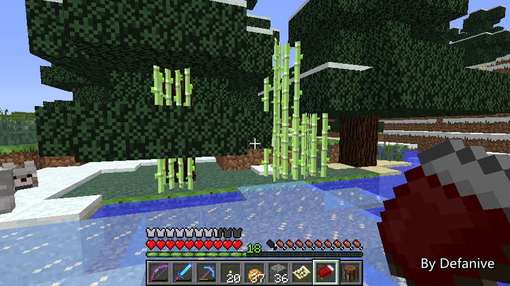

生长在树中间的甘蔗
EPF值基本就决定了这套防具对付这种攻击的好坏
而我们可以看到，IV级附魔的EPF值区分比较大
prot-5，fire prot-9，blast prot-11，proj prot-11，feather falling-18
尤其是protectionIV的EPF值只有可悲的5
（有多可悲呢，blast prot和proj prot的II级EPF也是5）
因此在对付不同种类伤害时，附魔变化就非常的大
——来自 MCLive

16373楼
2013-05-11 12:32